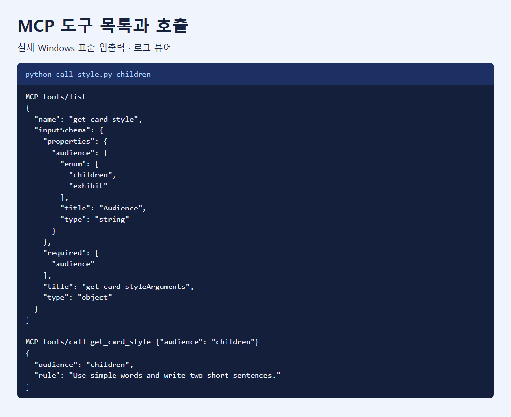

Windows 개인 실습
내 도구 실행과 연결
직접 고른 입력을 처리하고, 결과에 필요한 경우 Claude Code, 공개 API, MCP를 연결합니다.
내 작업 폴더에서 시작합니다
- 탐색기에서 작업 폴더를 엽니다. 주소 표시줄에
powershell을 입력한 뒤 아래 명령으로 현재 위치를 확인합니다.Get-Location - 입력과 기대 결과를 준비합니다. 직접 고른 공개 자료나 가상 텍스트를 필요하면
input.txt로 저장합니다. 어떤 값이 어떤 형식으로 나와야 성공인지 적어둡니다. - 실행 결과를 원문과 대조합니다. 값이 다르면 실행 기록에서 입력 확인, 처리, 저장 중 어느 단계에서 달라졌는지 먼저 찾습니다.
제작과 실행에 쓰는 두 가지 요청
Claude Code를 연결하고 응답을 확인합니다
- 설치와 계정 연결 상태를 각각 확인합니다.
claude --version claude auth status --text버전이 표시되고 Team 계정으로 연결되어 있다면 다음으로 넘어갑니다. 로그인이 필요한 경우
claude auth login으로 공식 로그인 화면을 열어 본인 Team 계정을 선택합니다. - 도구를 만들 때는 작업 폴더에서
claude를 엽니다. 입력, 처리, 결과 세 줄을 설명하고 바뀐 파일과 실행 방법을 확인합니다. - 도구가 모델을 부를 때는 한 번 요청하고 결과를 받습니다.
$sourceText = Get-Content -LiteralPath .\input.txt -Raw -Encoding UTF8 $instruction = Read-Host '이 입력으로 만들 결과를 적으세요' $taskPrompt = $instruction + [Environment]::NewLine + $sourceText claude -p $taskPrompt --output-format json-p는 답을 한 번 출력하고 종료합니다. JSON 응답에서result와is_error를 확인합니다. 이 PC의 Claude Code 연결을 해제하려면claude auth logout을 실행합니다.

확인할 곳 · claude auth status로 계정 연결을 확인한 뒤 실제 요청도 한 번 보냅니다. 응답이 오면 원문과 기대 결과에 맞는지 확인합니다. 오류가 나오면 응답에 표시된 계정, 사용량, 네트워크 상태를 살펴봅니다.
선택 실습 · 외부에서 값을 받기
공개 API에서 받은 한 값을 내 도구에 넣습니다
Open-Meteo의 API는 어떤 값으로 예보를 요청하고 어떤 항목을 받을지 정합니다. 위도·경도와 받고 싶은 항목을 HTTP로 보내면 예보가 JSON 형식으로 돌아옵니다.
- PowerShell에서 한 번 요청합니다.
Invoke-RestMethod는 응답 JSON을 PowerShell에서 읽을 수 있는 값으로 바꿉니다.$latitude = Read-Host '위도' $longitude = Read-Host '경도' $forecastUrl = "https://api.open-meteo.com/v1/forecast?latitude=$latitude&longitude=$longitude&hourly=precipitation_probability&timezone=Asia%2FSeoul&forecast_days=1" $weather = Invoke-RestMethod -Uri $forecastUrl -TimeoutSec 15 -ErrorAction Stop $weather.hourly.time[0] $weather.hourly.precipitation_probability[0] - 입력 형식을 정합니다. 첫 줄은 예보 시각, 둘째 줄은 같은 시각의 강수확률입니다. 자신의 도구에서 쓰려면
time과precipitation_probability중 필요한 항목을 정하고, 어떤 단계가 그 값을 사용할지 연결합니다. - 같은 구조로 다른 좌표를 넣습니다. 결과에서 시각과 값이 같은 순번으로 짝지어지는지 확인합니다. 비어 있는 데이터는 값 없음으로, 명령에 연결 오류가 나오면 요청 실패로 기록합니다. 강수확률
0은 정상적으로 받은 숫자입니다.
선택 실습 · 내 기능을 도구로 공개하기
내가 바꾼 규칙을 MCP로 호출합니다
독자 유형에 따라 글쓰기 규칙을 돌려주는 MCP 서버입니다. style_server.py가 도구를 제공하고 call_style.py가 그 도구를 호출합니다. tools/list는 도구 이름과 입력 스키마를 반환합니다. 스키마에서 audience에 어떤 값을 넣을 수 있는지 확인한 뒤, tools/call로 값을 보내 실제 규칙을 받습니다.
- MCP 실습 파일을 받습니다. ZIP을 풀고
requirements.txt가 있는 폴더에서 PowerShell을 엽니다. 이 폴더만 사용하는 Python 환경을 준비합니다.py -3 -m venv .venv .\.venv\Scripts\python.exe -m pip install -r requirements.txt - 서버의 도구를 한 번 호출합니다.
.\.venv\Scripts\python.exe call_style.py childrentools/list아래에서 도구 이름과audience허용값을 찾습니다.tools/call다음의rule이 호출 결과입니다. - 내가 고른 규칙으로 바꿉니다.
style_server.py의"children"값을 자신의 규칙 문장으로 수정한 뒤 같은 요청을 다시 보냅니다.


inputSchema에는 클라이언트가 넣을 값의 형식, rule에는 서버가 실제로 돌려준 값이 보입니다.확인 · rule이 내가 지정한 문장인지 확인합니다. 새 함수를 등록할 때는 입력값과 기대 출력을 먼저 정합니다.
같은 서버를 Claude Code에서 호출합니다
Python 호출이 끝났다면, 같은 MCP 서버를 Claude Code에 연결합니다. --scope local은 현재 작업 폴더의 개인 설정에 등록합니다.
$mcpPython = (Resolve-Path .\.venv\Scripts\python.exe).Path
$mcpServer = (Resolve-Path .\style_server.py).Path
claude mcp add --transport stdio --scope local hug-card -- "$mcpPython" "$mcpServer"
claude mcp get hug-card이 폴더에서 claude를 열고 /mcp로 연결을 확인합니다. get_card_style 도구를 audience=children으로 호출해서 rule 값을 보여줘.
라고 입력한 뒤, 호출 표시와 Python 실행에서 받은 규칙을 대조합니다. 등록을 해제하려면 같은 폴더에서 claude mcp remove --scope local hug-card를 실행합니다.
도구 목록이 나오기 전에 멈췄어요
Test-Path .\.venv\Scripts\python.exe의 결과를 확인합니다. No module named mcp가 보이면 설치와 실행 모두 같은 가상환경 Python을 사용했는지 봅니다. 규칙 수정 직후의 오류라면 style_server.py의 따옴표와 쉼표를 확인합니다.
내 도구에서 연결을 확인합니다
- 연결한 단계에 실제로 들어간 값과 나온 값을 각각 확인합니다.
- 같은 입력으로 실행한 뒤 예상 출력과 대조합니다. 외부 요청이 실패한 경우 어느 단계에 기록이 남는지도 확인합니다.
- 다른 입력을 넣고 같은 실행 순서로 처리되는지 확인합니다.
공식 문서와 설치 안내
- 설치 및 계정 연결 · Windows용 Python · Claude Code 설치 · Team 계정 연결
- 프로그램 호출 · Claude Code 명령형 실행 · Open-Meteo 예보 API
- 도구 연결 · MCP 아키텍처 · Claude Code의 MCP 연결